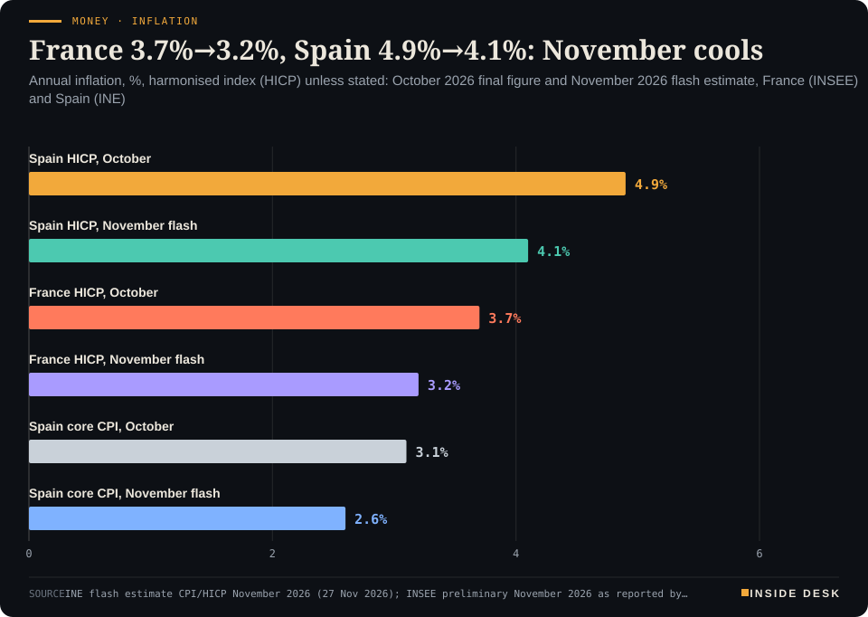
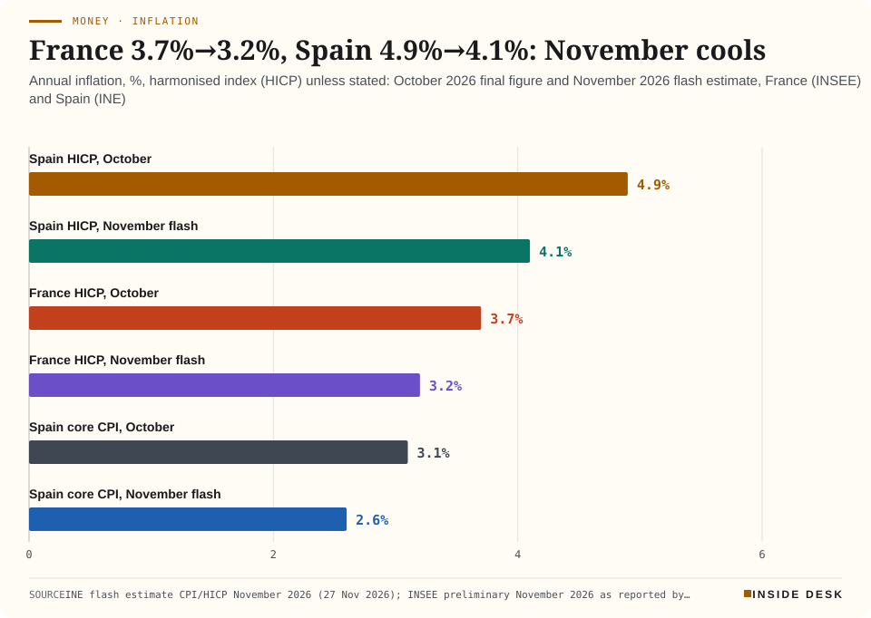
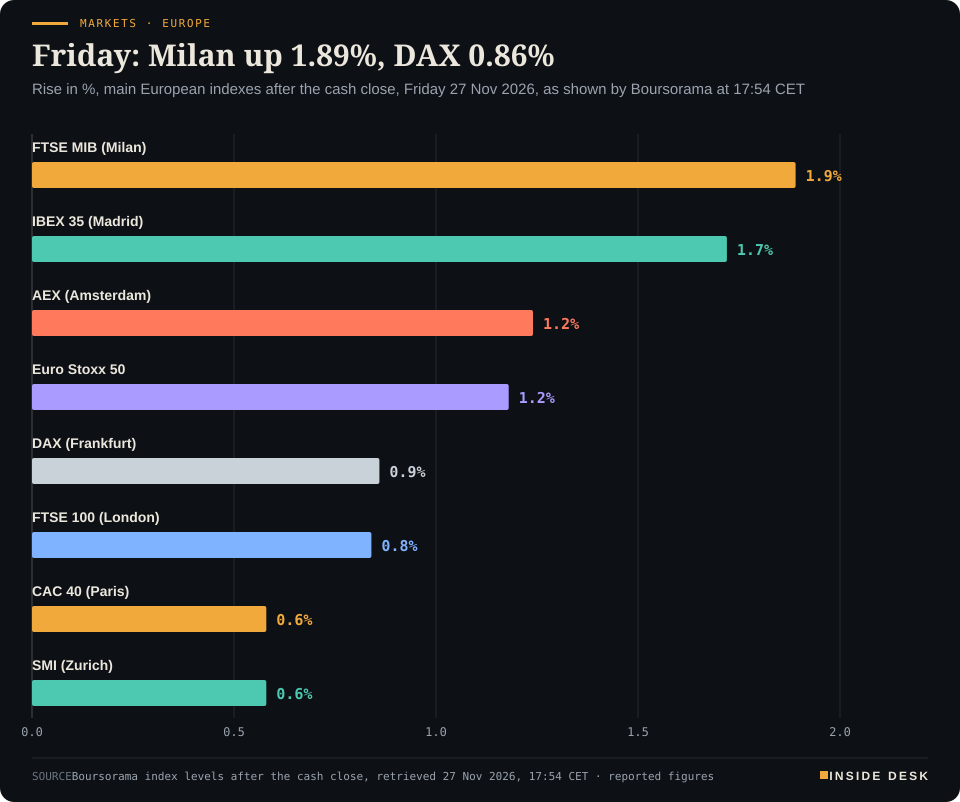
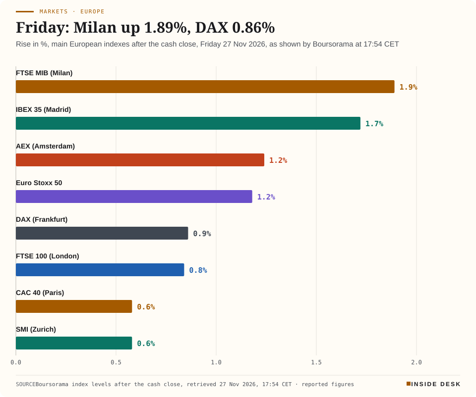
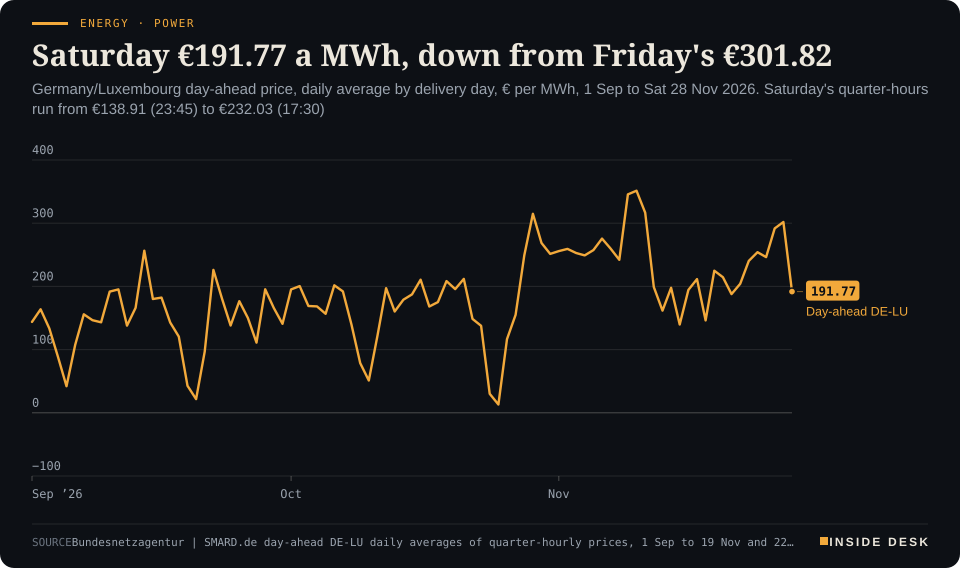
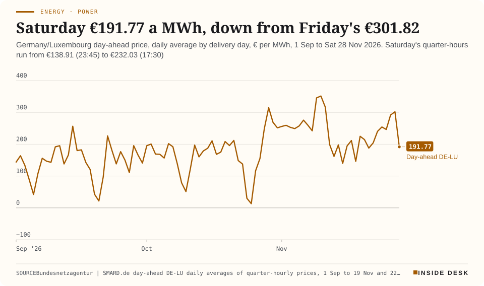

Inside Desk ePaper, Evening ePaper · Fri 27 Nov 2026
Friday, 27 November 2026Always free
Inside Desk
Evening ePaperPublished 18:30 CET · Berlin
Lead · Money, FX & Committees
France and Spain published November's first price readings on Friday. Both came in well below what analysts had pencilled in, and in Spain the slowdown went beyond fuel.
Also: every European index up into the weekend, a $149.5 billion US trade gap built from AI machines, a Podium vs Print on the EU budget, England’s early flu, €191.77 for Saturday power, and a drought counted in reservoirs.
France and Spain printed cooler prices than anyone forecast, Europe's markets closed the week higher, and Brussels set a date in December for the budget it could not agree on Thursday.
Geo-economics · p. 5
Markets & Macro · p. 6
Energy & Industry · p. 9
Climate & Weather · p. 15
The day in one sentenceFrance and Spain printed cooler prices than anyone forecast, Europe's markets closed the week higher, and Brussels set a date in December for the budget it could not agree on Thursday.
ContentsInside Desk · Evening ePaper27 November 2026
Also: every European index up into the weekend, a $149.5 billion US trade gap built from AI machines, a Podium vs Print on the EU budget, England’s early flu, €191.77 for Saturday power, and a drought counted in reservoirs.
11 edition pieces · 11 desks · Published 18:30 CET, 27 November 2026
24 ePaper extras, added , 27 November. They appear only in the ePaper and carry their own time.
France and Spain published November's first price readings on Friday. Both came in well below what analysts had pencilled in, and in Spain the slowdown went beyond fuel.
On Friday morning two statistics offices did more for the inflation debate than a week of speeches. France’s harmonised inflation rate was 3.2% in November, down from 3.7% in October, INSEE’s preliminary data showed1. A Reuters poll of 15 analysts had expected 3.6%1. The national index rose 2.9%, against 3.4% in October1.
Money · InflationFrance 3.7%→3.2%, Spain 4.9%→4.1%: November coolsAnnual inflation, %, harmonised index (HICP) unless stated: October 2026 final figure and November 2026 flash estimate, France (INSEE) and Spain (INE)


Bar chart of annual inflation in October and the November 2026 flash estimate. Spain's harmonised inflation falls from 4.9 percent in October to 4.1 percent in November; France's from 3.7 percent to 3.2 percent; Spain's core inflation, excluding unprocessed food and energy, from 3.1 percent to 2.6 percent. Analysts had expected 3.6 percent for France and 4.7 percent for Spain.
Source: INE flash estimate CPI/HICP November 2026 (27 Nov 2026); INSEE preliminary November 2026 as reported by Reuters (27 Nov 2026); Spain core October value as reported by FinanzaOnline · reported figures · CSV
Spain’s INE put its flash HICP at 4.1%, eight tenths below October’s 4.9%2. The office names the cause plainly: fuel prices fell, where they had risen in November 2025, and clothing and footwear rose less than a year earlier2. Consumer prices fell 0.6% from October2. The detail that matters most is core inflation, which strips out unprocessed food and energy: it dropped five tenths to 2.6%2. FinanzaOnline notes that analysts had expected 3.2% for Spanish core and 4.7% for the headline3. The slowdown therefore did not stop at the petrol pump. French services inflation eased too, from 2.6% to 2.3%3.
Traders, the Italian outlet reports, trimmed their bets on a December rate rise only slightly; a hike remains by far the most likely scenario priced in swaps3. That is the right temperament. Two countries are not the euro area, and a flash is an estimate, revised next month. Germany and Italy report on Monday, the euro area on Tuesday3,4.
What you can take from Friday is smaller and sturdier than a forecast. The energy shock is passing through the price indexes in the order textbooks describe: fuel first, then the things that carry fuel. Nobody announced it. Two spreadsheets showed it.
This is reporting, not investment advice.
Geo-economicsInside Desk · Evening ePaper27 November 2026
Geo-economics · 2 min
America's goods deficit widened sharply in October because it imported a record amount of machinery for data centres. Tariffs did not stop the containers.
The US goods trade deficit jumped 10.7%, or $14.4 billion, to $149.5 billion in October, the Census Bureau said on Friday1. Economists polled by Reuters had expected $133 billion1. Goods imports rose 6.1% to $365.3 billion, the highest since the series began in 19921. Capital goods led, up 8.5% on the month and 80.0% on the year1.
The reason is not mysterious. Businesses are spending heavily on AI, and the buildout relies on imported equipment1. ‘Capital goods imports are surging, showing that AI doesn’t always lead to greater US economic growth,’ said Christopher Rupkey of FWDBONDS1. Goldman Sachs economists wrote that the import surge is one reason AI adds less to GDP than corporate spending suggests1.
This week the administration also proposed new maximum rates of 20% to 40% on 14 major partners, including China, Japan and the EU1. Friday’s figures are the context the speeches leave out. The gap the tariffs are meant to close widened, because American firms chose to buy what they could not yet make. Invoices follow demand, not slogans.
This is reporting, not investment advice.
Geo-economics · Short item · ePaper extra, added
The US economy grew fast in the third quarter. Imports took a large slice back.
Trade subtracted 3.21 percentage points from US GDP growth in the third quarter, the government reported on Wednesday; the economy still grew at a 4.3% annualised rate, carried by consumer spending and AI-related equipment investment1. Trade has not added to growth for four straight quarters1. Inventory investment added 1.64 points in the third quarter1.
The arithmetic is simple and stubborn: what a country buys abroad does not count as its own output, however modern the machine.
Geo-economics · Brief · ePaper extra, added
The Trump administration this week proposed new maximum potential rates of 20% to 40% on 14 major trading partners, including China, Japan and the European Union, to counter what the White House calls excess industrial capacity, Reuters reports1. On Friday the goods deficit came in at $149.5 billion, the widest since March 20251. Imports have risen quickly despite the duties1. A tariff schedule is a proposal. The import ledger is what happened.
Markets & MacroInside Desk · Evening ePaper27 November 2026
Markets & Macro · 2 min
Every main European index finished the week's last session higher, with Milan and Madrid ahead and Zurich behind. No speech moved it. The inflation figures did some of the work.
Europe ended Friday the way it started Thursday: up. Boursorama’s levels after the cash close show Milan’s FTSE MIB up 1.89% at 49,275.60 and Madrid’s IBEX 35 up 1.72% at 19,386.601. The Euro Stoxx 50 gained 1.18%, Amsterdam’s AEX 1.24%, London’s FTSE 100 0.84% and the DAX 0.86% to 25,431.291. Paris rose 0.58% and Zurich’s SMI 0.58%1.
Markets · EuropeFriday: Milan up 1.89%, DAX 0.86%Rise in %, main European indexes after the cash close, Friday 27 Nov 2026, as shown by Boursorama at 17:54 CET


Bar chart of the rises on the main European stock indexes after the cash close on Friday 27 November 2026: FTSE MIB (Milan) up 1.89 percent to 49,275.60, IBEX 35 (Madrid) up 1.72 percent to 19,386.60, AEX (Amsterdam) up 1.24 percent to 1,096.67, Euro Stoxx 50 up 1.18 percent to 6,085.87, DAX (Frankfurt) up 0.86 percent to 25,431.29, FTSE 100 (London) up 0.84 percent to 10,698.81, CAC 40 (Paris) up 0.58 percent to 8,156.09, SMI (Zurich) up 0.58 percent to 14,903.71. Levels as shown by Boursorama at 17:54 CET.
Source: Boursorama index levels after the cash close, retrieved 27 Nov 2026, 17:54 CET · reported figures · CSV
Andreas Lipkow, writing for wallstreet:online, described investors as willing to buy German blue chips, ‘allerdings weiterhin sehr selektiv und nicht zu jedem Preis’ — very selectively, and not at any price2. Technology and carmakers stayed in demand2. He pointed to Friday’s US data: a wider goods trade deficit and stronger than expected wholesale inventories, which he reads as early signs of softer consumer momentum2.
The level is the dull fact. The DAX ended Thursday at 25,215.52 and stood at 25,431.29 after Friday’s close, by Boursorama’s count1. The week ends with Milan and Madrid at the top of the table and every main index in the black. Breadth is a better sign than height.
This is reporting, not investment advice.
Markets & Macro · Short item · ePaper extra, added
Frankfurt's Friday buyers wanted technology and cars, and they wanted them cheap.
Andreas Lipkow of wallstreet:online described Friday’s German buyers as selective and unwilling to pay any price1. Technology and carmakers stayed in demand: the first, he wrote, on hopes the AI trend continues, the second as dividend stories1. He read the day’s US trade and inventory data as hints of slower consumption and therefore of a cautious Fed1. The Census Bureau figures he referred to show wholesale inventories up 0.9% in October2.
A selective buyer is a healthier market than an eager one.
This is reporting, not investment advice.
Markets & Macro · Brief · ePaper extra, added
US markets reopened on Friday after Thursday’s holiday for a session that ends early, at 19:00 Berlin time. After Europe’s close, the S&P 500 was up 1.27% at 7,274.08 on Boursorama’s board, after 7,182.78 on Wednesday1. Tokyo’s Nikkei 225 had closed 2.11% higher at 58,711.111.
These are intraday levels, not closing prices. Half-day sessions are thin; the move means less than the number suggests.
This is reporting, not investment advice.
Markets & Macro · Brief · ePaper extra, added
Wall Street’s shortened Friday session closed at 19:00 Berlin time. The S&P 500 ended 1.6% higher at 7,297.49, the Nasdaq Composite gained 2.31% to 24,129.50 and the Dow added 591.99 points, or 1.18%, to 50,774.941,2. Over the week the Dow and the S&P 500 both rose more than 5% and the Nasdaq more than 6%, CNBC reported1.
A strong week after a hard month is a fact about prices, not a verdict on the month. The invoices behind the AI trade arrive on their own schedule.
This is reporting, not investment advice.
Politics & InstitutionsInside Desk · Evening ePaper27 November 2026
Politics & Institutions · Podium vs Print · 2 min
Emmanuel Macron warned against cutting the EU's next budget. The paper on the table already is a cut, and four countries walked out over its size.
Podium
“a strategic mistake”
Emmanuel Macron, French president, European Council, Brussels, 26 November 2026
Print€1.582tn
the budget totals €1.582tn, which includes €140bn to repay pandemic-era borrowing
The current proposal for the 2028–2034 budget, as reported by the BBC, 27 November 2026
The podium. France’s president said it would be ‘a strategic mistake’ to lower the EU’s long-term spending1. Countries such as France and Italy want a higher-spending budget; Germany leads those who want restraint1.
The print. The Commission’s original proposal was €2tn1. The paper set up to break the impasse proposes cutting roughly €220bn to €230bn, and the budget under the current proposal totals €1.582tn, including €140bn to repay pandemic-era borrowing1. Four countries that want it smaller, among them Denmark and Austria, walked out after several hours1. The talks ended after 12 hours on Thursday without a deal1. Friedrich Merz spoke of ‘new movement’ but said ‘we are not there yet’1.
The gap. The podium argues about direction. The print has already moved: cuts of roughly €220bn to €230bn are on the table before a single vote1. Seven-year budgets need all 27 signatures, so the size that survives will be the size the most reluctant government can sign. Bulgaria, which had opposed the Ukraine loan, now says it will fund its non-military part1. That is what progress looks like in Brussels: one country, one half of one line.
This is reporting, not investment advice.
Politics & Institutions · Short item · ePaper extra, added
France's 2027 election walked into the budget room.
Marine Le Pen, frontrunner in France’s presidential race, called the budget talks ‘underhanded political manoeuvring to thwart the democratic will of the French people’, the BBC reports1. Last month she said she would significantly reduce French aid to Ukraine and EU contributions if elected1. …
Talks on the EU’s 2028–2034 budget ended after 12 hours on Thursday, with four countries walking out after several hours, the BBC reports1. The European Council has called a two-day summit for 17 and 18 December1. Each country effectively holds a veto1. A missed deadline in Brussels is a scheduling fact, not a collapse.
Pablo Hernández de Cos was named as the next president of the European Central Bank, replacing Christine Lagarde from February 2027, the BBC reports1. It was the one decision the summit finished. Appointments are quieter than budgets, and usually last longer.
Psychology & BehaviourInside Desk · Evening ePaper27 November 2026
Psychology & Behaviour · 2 min
England's housing survey asked people how often they feel lonely. The answer depends on whether you own, rent privately or rent from a social landlord.
The English Housing Survey for 2025-26, published on Thursday, asks household reference persons the standard national question: how often do you feel lonely1. Among owner occupiers, 4% said often or always1. Among private renters it was 8%, and among social renters 13%1. Within social housing, 15% of council tenants said so, against 12% of housing association tenants1. Owner occupiers were also likelier to say they never feel lonely: 38%, against 29% of private renters1.
The survey is careful about what it does not claim. The link between well-being and tenure ‘could be mediated by related factors, such as income, age and working status’1. Owning a home does not make you less lonely. People who own homes tend to be older, richer and more settled, and those things travel together.
Two other lines deserve your attention. Across all tenures, mean anxiety stood at 3.0 out of 10 in 2025-26, against 2.7 before the pandemic1. And the share in each tenure who feel lonely often or always has stayed broadly the same since 2021-221. No surge, no recovery. A dull, steady number is still a number someone can work on, street by street.
Psychology & Behaviour · Short item · ePaper extra, added
Satisfaction with one's home slipped a little since before the pandemic.
In 2025-26, 94% of owner occupiers in England said they were satisfied with their accommodation, 82% of private renters and 75% of social renters1. Since 2019-20, satisfaction fell slightly among owners, from 95%, and among social renters, from 78%1. Across all tenures, life satisfaction averaged 7.5, against 7.7 before the pandemic1.
Small declines measured carefully over years are more useful than large ones asserted loudly. These are the careful kind.
Owner occupiers in England scored a mean of 7.8 out of 10 for life satisfaction in 2025-26, private renters 7.3 and social renters 6.9, the English Housing Survey reports1. Anxiety ran the other way: 2.7, 3.4 and 3.61. Private renters’ life satisfaction rose from 7.1 in 2024-251. The survey warns that income, age and work may explain much of the gap1.
Energy & IndustryInside Desk · Evening ePaper27 November 2026
Energy & Industry · 2 min
Saturday's wholesale electricity in Germany costs more than a third less than Friday's, the dearest day since mid-November. Weekends still do what weekends do.
Friday’s day-ahead auction set Saturday’s German-Luxembourg electricity price at an average of €191.77 a megawatt hour, according to Energy-Charts data from the Bundesnetzagentur’s SMARD platform1. Friday itself averaged €301.82, the cold week’s dearest day1. Saturday’s quarter-hours run from €138.91 at 23:45 to €232.03 at 17:301.
Energy · PowerSaturday €191.77 a MWh, down from Friday's €301.82Germany/Luxembourg day-ahead price, daily average by delivery day, € per MWh, 1 Sep to Sat 28 Nov 2026. Saturday's quarter-hours run from €138.91 (23:45) to €232.03 (17:30)


Line chart of the daily average German-Luxembourg day-ahead electricity price from 1 September to 28 November 2026, in euros per megawatt hour. Prices mostly ran between about €100 and €210 in September and October, climbed above €250 from late October, peaked at €351.48 on Tuesday 10 November, fell to €139.70 on Sunday 15 November, rose to €291.77 on Thursday 26 November and €301.82 on Friday 27 November, and fall to €191.77 for the latest delivery day, Saturday 28 November.
Source: Bundesnetzagentur | SMARD.de day-ahead DE-LU daily averages of quarter-hourly prices, 1 Sep to 19 Nov and 22 Nov 2026 retrieved 22 Nov 2026; 20, 21 Nov retrieved 23 Nov; 23 to 25 Nov via Fraunhofer ISE Energy-Charts (data: Bundesnetzagentur | SMARD.de), retrieved 24 Nov 2026; 26 Nov retrieved 25 Nov; 27 Nov retrieved 26 Nov; 28 Nov retrieved 27 Nov 2026, 17:26 CET · CC BY 4.0 · CSV
The fall is mostly the calendar. Offices and factories close, demand drops, and the expensive gas plants at the top of the merit order are needed less. It is not a turn in the energy shock. Brent crude futures traded at $96.60 a barrel on Friday afternoon and were set to snap a three-week losing streak, Reuters reported via RTÉ, after attacks on tankers in the Strait of Hormuz and on Saudi infrastructure2. Saudi Aramco’s Jazan refinery temporarily halted some operations after a projectile struck it on Thursday, killing a Nepali worker2.
So the two numbers point in different directions for different reasons. Oil prices a war; Saturday’s power prices a weekend. You pay both, but only one of them you can shift by running the washing machine at night.
This is reporting, not investment advice.
Energy & Industry · Short item · ePaper extra, added
Oil was set to end a three-week slide as attacks on Gulf shipping and Saudi refineries continued.
Brent crude futures traded at $96.60 a barrel on Friday afternoon, after four sessions of gains, and touched their highest since 9 November, Reuters reports via RTÉ1. WTI was at $85.141. Iran has continued to attack ships in the Strait of Hormuz, and Yemen’s Houthis have struck Saudi infrastructure, including Ras Tanura1. ANZ analysts think Brent can push above $100 without a major new escalation, but that ‘increasingly requires evidence of constrained deliverable supply’1.
OPEC+ meets on Sunday1. An analyst’s ‘can’ is not a price. It is a condition, and conditions are worth reading.
This is reporting, not investment advice.
Energy & Industry · Brief · ePaper extra, added
Russia has carried out more than 1,000 strikes on Ukraine’s energy system since September, targeting generation and high-voltage substations, Euronews reports1. After the attack on 20 November Ukraine halted electricity exports, and imports reached their highest level since mid-June, according to the Centre for Economic Strategy1. On Friday engineers in Dnipropetrovsk carried out emergency shutdowns after voltage fell in the high-voltage grid1. Europe’s interconnectors are now part of Ukraine’s air defence.
Money, FX & CommitteesInside Desk · Evening ePaper27 November 2026
Money, FX & Committees · Short item · ePaper extra, added
Headline inflation falls when fuel falls. Core inflation falls when the rest of the economy follows.
Spain’s flash core inflation, excluding unprocessed food and energy, fell five tenths to 2.6% in November, INE said1. On the harmonised measure core stood at 2.7%1. FinanzaOnline reports that economists had expected 3.2% for core, which is why the outlet says the slowdown goes beyond energy2. Prices overall fell 0.6% on the month1.
A flash is an advance figure, confirmed or revised next month1. Read it as a direction, not a verdict.
Money, FX & Committees · Brief · ePaper extra, added
Destatis lists its preliminary November consumer prices for Monday 30 November, published ‘im Laufe des Tages’2. FinanzaOnline puts the time at 14:00 and reports that economists expect German harmonised inflation to slow to 2.7% from 2.9%1. Italy’s Istat reports the same morning, starting from 5.6% on the harmonised measure in October1. The euro-area flash follows on Tuesday 1 December, from 4% in October, with expectations of 3.9% to 4%1.
Expectations are not data. On Monday you will have data.
Ordinary & Inherited LifeInside Desk · Evening ePaper27 November 2026
Ordinary & Inherited Life · 2 min
Black Friday's headlines are forecasts. Friday's actual numbers were a holiday's online receipts and a month of stock on wholesalers' shelves.
Three entries from the back office of the holiday season.
$7.1 billion. US consumers spent about that much online on Thanksgiving Day, 10.4% more than last year, according to Adobe Analytics1. Adobe forecasts $12.9 billion for Black Friday itself, up 9.2%1. Reuters notes that most of the season’s projected gains will come from inflation, which at 3.8% runs about a percentage point above each of the last two years1.
82%. That is the share of consumers in a November survey by the National Retail Federation who said they were taking steps to manage holiday costs, such as buying cheaper gifts or buying for fewer people2. The NRF expects 182.7 million people to shop over the five days to Cyber Monday, against 186.9 million who did last year2.
0.9%. Wholesale inventories rose that much in October, after 0.8% in September; retail inventories rose 0.8%3. It is the least glamorous line of the day. It is also the one that decides whether January brings discounts or empty shelves.
One shopper in Raleigh told Reuters he would only buy items discounted by at least 40%1. That is not a mood. It is a rule, and rules are what budgets are made of.
This is reporting, not investment advice.
Ordinary & Inherited Life · Short item · ePaper extra, added
Participation in the five-day sales is the highest in a decade. Some of it will be paid for in instalments.
Deloitte’s survey of 1,200 consumers found 87% planned to buy during the Black Friday and Cyber Monday sales, up from 82% in 2025, CNBC reports1. Shoppers expect to spend an average of $624, similar to last year1. Some 40% of Generation Z shoppers plan to use buy now, pay later1. Deloitte’s Brian McCarthy described people ‘feeling the squeeze on prices’ but ‘still wanting to protect the holidays’1.
Instalments are not a scandal. They are a bill with a later date. Write the date down.
Ordinary & Inherited Life · Brief · ePaper extra, added
Adobe expects Cyber Monday to remain the biggest online shopping day, with sales up 6.2% to $15.1 billion, Anadolu Agency reports1. Over the five days from Thanksgiving it forecasts $47.5 billion online, up 7.4%1. The NRF expects November-December holiday retail sales of $1.013 trillion, up 4.2%1. Oxford Economics expects 2.2% growth after inflation1. The gap between those two growth rates is the price level.
Tech & ComputeInside Desk · Evening ePaper27 November 2026
Tech & Compute · 2 min
Singapore's competition watchdog published a study of its AI market. It found no monopoly yet, and plenty of ordinary cheating made easier.
The Competition and Consumer Commission of Singapore released the findings of its AI Market Study on Friday1. Its main finding is reassuring: businesses generally have a good range of cloud providers and AI models and can switch between them1. The risks it names are specific. Dominant firms could favour their own products or restrict access to essential technologies; dominant AI agent providers could stop rival agents from working with other operating systems; and AI pricing tools could learn to coordinate prices ‘even without being explicitly instructed to do so’1.
The consumer section is the more concrete. CCS says that in 2026 it acted against a fake review provider that used generative AI to write reviews for about 100 businesses1. AI can also personalise dark patterns, such as false scarcity messages, to an individual’s online behaviour1. And as AI enters appliances and cars, the study asks for manual overrides and components ‘that cannot be overridden by AI’1.
Out of this come eight guiding principles, from pro-competitive algorithms to accuracy1. They are not a law. They are a regulator telling a market, in plain words, what it will look for. That is how most good rules begin.
Tech & Compute · Short item · ePaper extra, added
Singapore's regulator explains how AI makes an old sales trick harder to see.
Dark patterns are interface tricks that nudge people into choices against their interests. Singapore’s CCS says AI can personalise them, for example false scarcity messages tailored to a consumer’s online behaviour, and makes it easier to build websites that use such tactics1. The regulator admits the covert nature of some dark patterns ‘makes them difficult to detect and address’1. In 2025 it found a car-detailing workshop had used ChatGPT to generate reviews for customers without their knowledge1.
On a Black Friday, ‘only two left’ is worth reading twice.
Tech & Compute · Brief · ePaper extra, added
US imports of capital goods rose 8.5% in October and 80.0% on the year, Reuters reports, citing the Census Bureau; the AI infrastructure buildout ‘is heavily reliant on imports’1. Goldman Sachs economists say this is one reason AI adds less to GDP than corporate spending figures suggest1. Software is weightless. Data centres are not.
Health & CareInside Desk · Evening ePaper27 November 2026
Health & Care · 2 min
Flu admissions rose sharply across England, and nearly tripled in the South East. Hospitals are busy, and vaccine uptake among small children is lower than last year.
Flu hospital admissions across England rose by almost 80% in a week, and in the South East the rate almost tripled, according to the UK Health Security Agency1. The South West saw a rise of about a quarter1. ‘A lot of people think it’s not serious. It absolutely is,’ said Dr Suzanna McDonald of UKHSA1. Flu arrived ‘a few weeks ahead’ of last year, she said, but remains ‘very, very unpredictable’: last season also started early and peaked at moderate levels1.
The hospitals feel it. More than 570 patients passed through the Royal Berkshire Hospital’s emergency department in a single 24-hour period last week, which its chief operating officer called ‘probably’ the second busiest day it had ever had1. RSV kept the children’s department busy too1. Some hospitals, including Queen Alexandra in Portsmouth, are encouraging masks in certain areas1.
The weak line is uptake. Just over a third of two- and three-year-olds have had a flu vaccine, and uptake among young children and over-65s is lower than at the same point last year1. A GP in Oxfordshire noted that the vaccine needs a couple of weeks to take effect, so a jab now covers Christmas1. Health systems are built for winter. They work best when the appointments are kept.
Health & Care · Short item · ePaper extra, added
A grant would let Gavi restore its support to 85% of eligible children in high-burden areas.
Gavi said on Friday it has received a grant of up to $214 million from GiveWell to sustain and expand malaria vaccination in Africa1. If approved by Gavi’s board in December, it would restore support to 85% of eligible populations in moderate- and high-transmission areas, after funding limits had cut planned support to 70%1. Sabin Vaccine Institute analysis finds three-dose coverage at 70% on average where the vaccine is being rolled out, and first-dose coverage at 80%1. Malaria vaccination is now routine in 25 African countries1.
In 2024 there were an estimated 610,000 malaria deaths, around 74% of them children under five1. A grant is paperwork. Here the paperwork is doses.
Health & Care · Brief · ePaper extra, added
Just over a third of two- and three-year-olds in England have had a flu vaccine, UKHSA figures show, and uptake among young children and over-65s is lower than at the same point last year, the BBC reports1. School-age children who missed the nasal spray at school can get it at some pharmacies from 1 December1. Children carry flu home. A spray in December protects a grandparent at Christmas.
Security & OrderInside Desk · Evening ePaper27 November 2026
Security & Order · 2 min
Russia's overnight attack hit rail, energy and homes in nine Ukrainian regions. Ukraine has stopped exporting electricity and is importing the most since June.
Since Thursday evening Russia launched 155 strike drones at Ukraine, 51 of them jet-powered, and Ukrainian air defences shot down 110, Euronews reports, citing the air force1. Prime Minister Sergey Koretsky said strikes hit the railway, the energy sector, civilian enterprises and homes in nine regions1. Two people were killed at an enterprise in Nizhyn, an 86-year-old woman in Izium and one person in Kryvyi Rih1.
The figure behind the night is in the grid. After the attack on 20 November Ukraine completely halted electricity exports, and imports reached their highest since mid-June, according to the Centre for Economic Strategy1. Since September Russia has carried out more than 1,000 strikes on the energy system, including high-voltage substations1. Ukrainian drones in turn struck a Rosatom heat and power plant and a synthetic rubber plant in Yefremov, which Kyiv says makes solid rocket fuel components1.
Zelenskyy said on Thursday night that Russia was preparing ‘a new mass strike’ and asked people to heed missile alarms2. Donald Trump wrote that he had asked Vladimir Putin to pull back ‘all Military aggression against territories throughout Europe’2. The warning and the request arrived on the same night. Only one of them came with a count.
Security & Order · Short item · ePaper extra, added
The US president described his talks with Putin on social media. Ukraine's air force described the night.
Donald Trump wrote on Truth Social that he had spent ‘a lot of time’ with Vladimir Putin in China on pulling back military aggression in Europe, calling the war ‘A COMPLETE BLOODBATH’ and a quick deal ‘a strong possibility’, Al Jazeera reports1. He said he briefed NATO’s Mark Rutte at Mar-a-Lago on Wednesday1. The same night Russia struck Kyiv with ballistic missiles, wounding seven people1. Possibilities are announced; strikes are counted. Watch the count.
Security & Order · Brief · ePaper extra, added
Ukraine launched nearly 500 strikes at Russian targets more than 500km away in 2026, more than in the first four years of the war combined, according to AFP analysis of ACLED data to 20 November, the Guardian reports1. Some targets were 1,500km from both sides1. Ukraine’s foreign minister expressed ‘regret’ over ‘unintended consequences’ of an attack on Russian ships in a Libyan port1. Range brings reach, and with reach comes responsibility for where the debris falls.
Climate & WeatherInside Desk · Evening ePaper27 November 2026
Climate & Weather · 2 min
Reservoirs are filling slowly, but England needs well above average rain all winter to leave drought by spring. The weekly report is a lesson in patient accounting.
England’s reservoirs held 60.2% of their capacity on 24 November, up on the week, the Environment Agency’s weekly drought report says1. Fourteen reservoirs or groups remain less than 50% full, eight of them classed as exceptionally low1. Severe drought persists in parts of Cornwall, Devon, Dorset, Somerset and East and West Sussex, areas that rely on Ardingly and Wimbleball reservoirs1.
The sentence that matters is a requirement, not a forecast: ‘We need at least 120% of average rainfall over the next 5 months for the entire country to be out of drought by the spring’1. Last week rain totals ranged from 49mm in the south-west to 11mm in the east, and river flows fell at more than three-quarters of reported sites1. Groundwater fell at most sites because dry soils delay recharge1.
Farmers feel it first. Many irrigation reservoirs began the refill season at historic lows, and there are 386 restrictions on abstraction licences, down from 431 the week before1. The agency is advising the sector to act now in case drought runs into spring1. It is unglamorous work: permits, licences, lock closures on canals. It is also how a country keeps the taps on without anyone noticing.
Climate & Weather · Short item · ePaper extra, added
Storms on America's east coast cut power to nearly a million customers and postponed a parade for the first time.
Heavy rain and high winds swept the US east coast on Thanksgiving, cutting power to nearly a million customers at the peak and leading to water rescues from New York to Virginia, the Guardian reports1. New Jersey saw flooding at levels not seen since Hurricane Sandy in 2012; the strongest gust, 82 mph, was measured in Mantoloking1. Macy’s postponed its parade for the first time1. St Louis had 7.3 inches of snow, and freeze warnings cover parts of the Deep South1.
‘The bulk of the storm impacts are behind us, but tidal flooding will continue today,’ the National Weather Service said on Friday1. Clean-up is the part of weather that never trends.
Climate & Weather · Brief · ePaper extra, added
There are 386 restrictions on abstraction licences in England, down from 431 a week earlier, the Environment Agency reports1. Seven navigation closures and four restrictions remain on the Canal & River Trust network1. Confirmed drought incidents total 440 this year, with no new ones in the last two weeks1. Every one of those numbers is a form someone filed. That is how adaptation looks up close.
Charts and dataInside Desk · Evening ePaper27 November 2026
Charts and data
Energy · PowerSaturday €191.77 a MWh, down from Friday's €301.82Germany/Luxembourg day-ahead price, daily average by delivery day, € per MWh, 1 Sep to Sat 28 Nov 2026. Saturday's quarter-hours run from €138.91 (23:45) to €232.03 (17:30)
Line chart of the daily average German-Luxembourg day-ahead electricity price from 1 September to 28 November 2026, in euros per megawatt hour. Prices mostly ran between about €100 and €210 in September and October, climbed above €250 from late October, peaked at €351.48 on Tuesday 10 November, fell to €139.70 on Sunday 15 November, rose to €291.77 on Thursday 26 November and €301.82 on Friday 27 November, and fall to €191.77 for the latest delivery day, Saturday 28 November.
Source: Bundesnetzagentur | SMARD.de day-ahead DE-LU daily averages of quarter-hourly prices, 1 Sep to 19 Nov and 22 Nov 2026 retrieved 22 Nov 2026; 20, 21 Nov retrieved 23 Nov; 23 to 25 Nov via Fraunhofer ISE Energy-Charts (data: Bundesnetzagentur | SMARD.de), retrieved 24 Nov 2026; 26 Nov retrieved 25 Nov; 27 Nov retrieved 26 Nov; 28 Nov retrieved 27 Nov 2026, 17:26 CET · CC BY 4.0 · CSV
Latest values
Series
Value
Date
Chart
Day-ahead DE-LU
191.77
28 Nov 2026
Saturday €191.77 a MWh, down from Friday's €301.82
Last data point of each series in the charts above, from the Inside Desk data archive. Sources under each chart.
Back pageInside Desk · Evening ePaper27 November 2026
Before you close the tab
The day in one sentence
France and Spain printed cooler prices than anyone forecast, Europe's markets closed the week higher, and Brussels set a date in December for the budget it could not agree on Thursday.
One thing you can do this week
This weekend, when a shop tells you 'only two left', leave the item in the basket overnight and look again in the morning. Singapore's competition regulator warned on Friday that AI can personalise false scarcity messages to your own browsing 1. A night's sleep is the cheapest filter there is.
A habit, not advice.
What went right
Malaria vaccination is now part of routine immunisation in 25 African countries, and three-dose coverage has reached 70% on average where it is being rolled out, Gavi reported on Friday 2. A new grant of up to $214 million would, if Gavi's board approves it in December, restore support to 85% of eligible children in high-transmission areas 2. One of the fastest vaccine rollouts in Gavi's history is being run by clinics, schedules and cold boxes.
In euros at home
Saturday's German wholesale electricity averages €191.77 a megawatt hour, about 19.2 cents a kilowatt hour before grid fees, taxes and margins, against €301.82 for Friday 3. Desk arithmetic: a household on a dynamic tariff that uses 8 kWh pays about €1.53 for the energy part at Saturday's average, against about €2.41 at Friday's. Moving a 1 kWh washing-machine run from 17:30 on Saturday (€232.03 per MWh) to 23:45 (€138.91) saves about 9 cents 3. On a fixed tariff none of this changes your bill this week.
Desk arithmetic on the cited figures.
Small words
Flash estimate
An early reading of a month's inflation, published before the month's full price data are in and confirmed or revised later. Spain's statistics office calls its November figure 'a preview of the final data that will be published next month' 4. A flash tells you the direction early. The final figure tells you the size.
Commentary for information only. Not investment, legal, tax, medical or political advice. Inside Desk is free and reader-supported. Every number is sourced in the piece it appears in.
This issue has been updated.
All articles in this edition
Money, FX & Committees · 2 min read
3.2% and 4.1%: Europe's prices cooled faster than the forecasts
France and Spain published November's first price readings on Friday. Both came in well below what analysts had pencilled in, and in Spain the slowdown went beyond fuel.
On Friday morning two statistics offices did more for the inflation debate than a week of speeches. France’s harmonised inflation rate was 3.2% in November, down from 3.7% in October, INSEE’s preliminary data showed1. A Reuters poll of 15 analysts had expected 3.6%1. The national index rose 2.9%, against 3.4% in October1.
Money · InflationFrance 3.7%→3.2%, Spain 4.9%→4.1%: November coolsAnnual inflation, %, harmonised index (HICP) unless stated: October 2026 final figure and November 2026 flash estimate, France (INSEE) and Spain (INE)
Bar chart of annual inflation in October and the November 2026 flash estimate. Spain's harmonised inflation falls from 4.9 percent in October to 4.1 percent in November; France's from 3.7 percent to 3.2 percent; Spain's core inflation, excluding unprocessed food and energy, from 3.1 percent to 2.6 percent. Analysts had expected 3.6 percent for France and 4.7 percent for Spain.
Source: INE flash estimate CPI/HICP November 2026 (27 Nov 2026); INSEE preliminary November 2026 as reported by Reuters (27 Nov 2026); Spain core October value as reported by FinanzaOnline · reported figures · CSV
Spain’s INE put its flash HICP at 4.1%, eight tenths below October’s 4.9%2. The office names the cause plainly: fuel prices fell, where they had risen in November 2025, and clothing and footwear rose less than a year earlier2. Consumer prices fell 0.6% from October2. The detail that matters most is core inflation, which strips out unprocessed food and energy: it dropped five tenths to 2.6%2. FinanzaOnline notes that analysts had expected 3.2% for Spanish core and 4.7% for the headline3. The slowdown therefore did not stop at the petrol pump. French services inflation eased too, from 2.6% to 2.3%3.
Traders, the Italian outlet reports, trimmed their bets on a December rate rise only slightly; a hike remains by far the most likely scenario priced in swaps3. That is the right temperament. Two countries are not the euro area, and a flash is an estimate, revised next month. Germany and Italy report on Monday, the euro area on Tuesday3,4.
What you can take from Friday is smaller and sturdier than a forecast. The energy shock is passing through the price indexes in the order textbooks describe: fuel first, then the things that carry fuel. Nobody announced it. Two spreadsheets showed it.
This is reporting, not investment advice.
Desk comment A rate committee reads prints, not moods. On Friday the prints argued for patience.
$149.5 billion: the AI boom arrives through the port
America's goods deficit widened sharply in October because it imported a record amount of machinery for data centres. Tariffs did not stop the containers.
The US goods trade deficit jumped 10.7%, or $14.4 billion, to $149.5 billion in October, the Census Bureau said on Friday1. Economists polled by Reuters had expected $133 billion1. Goods imports rose 6.1% to $365.3 billion, the highest since the series began in 19921. Capital goods led, up 8.5% on the month and 80.0% on the year1.
The reason is not mysterious. Businesses are spending heavily on AI, and the buildout relies on imported equipment1. ‘Capital goods imports are surging, showing that AI doesn’t always lead to greater US economic growth,’ said Christopher Rupkey of FWDBONDS1. Goldman Sachs economists wrote that the import surge is one reason AI adds less to GDP than corporate spending suggests1.
This week the administration also proposed new maximum rates of 20% to 40% on 14 major partners, including China, Japan and the EU1. Friday’s figures are the context the speeches leave out. The gap the tariffs are meant to close widened, because American firms chose to buy what they could not yet make. Invoices follow demand, not slogans.
This is reporting, not investment advice.
Desk comment A tariff is a speech with a price tag. A customs declaration is the price.
Minus 3.21 points: what trade took from the quarter
The US economy grew fast in the third quarter. Imports took a large slice back.
Trade subtracted 3.21 percentage points from US GDP growth in the third quarter, the government reported on Wednesday; the economy still grew at a 4.3% annualised rate, carried by consumer spending and AI-related equipment investment1. Trade has not added to growth for four straight quarters1. Inventory investment added 1.64 points in the third quarter1.
The arithmetic is simple and stubborn: what a country buys abroad does not count as its own output, however modern the machine.
Appears only in the ePaper · Commentary for information only. Not advice.
Geo-economics · Brief · ePaper extra, added
20% to 40%: the tariff menu for 14 partners
Washington proposed new maximum rates this week. Friday's trade data arrived as the counter-argument.
The Trump administration this week proposed new maximum potential rates of 20% to 40% on 14 major trading partners, including China, Japan and the European Union, to counter what the White House calls excess industrial capacity, Reuters reports1. On Friday the goods deficit came in at $149.5 billion, the widest since March 20251. Imports have risen quickly despite the duties1. A tariff schedule is a proposal. The import ledger is what happened.
Appears only in the ePaper · Commentary for information only. Not advice.
Markets & Macro · 2 min read
Plus 1.89% in Milan, plus 0.86% in Frankfurt: a quiet Friday close
Every main European index finished the week's last session higher, with Milan and Madrid ahead and Zurich behind. No speech moved it. The inflation figures did some of the work.
Europe ended Friday the way it started Thursday: up. Boursorama’s levels after the cash close show Milan’s FTSE MIB up 1.89% at 49,275.60 and Madrid’s IBEX 35 up 1.72% at 19,386.601. The Euro Stoxx 50 gained 1.18%, Amsterdam’s AEX 1.24%, London’s FTSE 100 0.84% and the DAX 0.86% to 25,431.291. Paris rose 0.58% and Zurich’s SMI 0.58%1.
Markets · EuropeFriday: Milan up 1.89%, DAX 0.86%Rise in %, main European indexes after the cash close, Friday 27 Nov 2026, as shown by Boursorama at 17:54 CET
Bar chart of the rises on the main European stock indexes after the cash close on Friday 27 November 2026: FTSE MIB (Milan) up 1.89 percent to 49,275.60, IBEX 35 (Madrid) up 1.72 percent to 19,386.60, AEX (Amsterdam) up 1.24 percent to 1,096.67, Euro Stoxx 50 up 1.18 percent to 6,085.87, DAX (Frankfurt) up 0.86 percent to 25,431.29, FTSE 100 (London) up 0.84 percent to 10,698.81, CAC 40 (Paris) up 0.58 percent to 8,156.09, SMI (Zurich) up 0.58 percent to 14,903.71. Levels as shown by Boursorama at 17:54 CET.
Source: Boursorama index levels after the cash close, retrieved 27 Nov 2026, 17:54 CET · reported figures · CSV
Andreas Lipkow, writing for wallstreet:online, described investors as willing to buy German blue chips, ‘allerdings weiterhin sehr selektiv und nicht zu jedem Preis’ — very selectively, and not at any price2. Technology and carmakers stayed in demand2. He pointed to Friday’s US data: a wider goods trade deficit and stronger than expected wholesale inventories, which he reads as early signs of softer consumer momentum2.
The level is the dull fact. The DAX ended Thursday at 25,215.52 and stood at 25,431.29 after Friday’s close, by Boursorama’s count1. The week ends with Milan and Madrid at the top of the table and every main index in the black. Breadth is a better sign than height.
This is reporting, not investment advice.
Desk comment A good week in markets is mostly a week in which nothing needed explaining.
Markets & Macro · Short item · ePaper extra, added
'Not at any price': the buyer's condition
Frankfurt's Friday buyers wanted technology and cars, and they wanted them cheap.
Andreas Lipkow of wallstreet:online described Friday’s German buyers as selective and unwilling to pay any price1. Technology and carmakers stayed in demand: the first, he wrote, on hopes the AI trend continues, the second as dividend stories1. He read the day’s US trade and inventory data as hints of slower consumption and therefore of a cautious Fed1. The Census Bureau figures he referred to show wholesale inventories up 0.9% in October2.
A selective buyer is a healthier market than an eager one.
Appears only in the ePaper · Commentary for information only. Not advice.
Markets & Macro · Brief · ePaper extra, added
Plus 1.27% at Europe's close: New York's short Friday
Wall Street opened after Thanksgiving for a shortened session that closes after this edition goes out.
US markets reopened on Friday after Thursday’s holiday for a session that ends early, at 19:00 Berlin time. After Europe’s close, the S&P 500 was up 1.27% at 7,274.08 on Boursorama’s board, after 7,182.78 on Wednesday1. Tokyo’s Nikkei 225 had closed 2.11% higher at 58,711.111.
These are intraday levels, not closing prices. Half-day sessions are thin; the move means less than the number suggests.
Appears only in the ePaper · Commentary for information only. Not advice.
Markets & Macro · Brief · ePaper extra, added
Plus 1.6% at the bell: New York's short Friday closes a 5% week
The half-day session after Thanksgiving ended at 19:00 Berlin time with all three US indices higher.
Wall Street’s shortened Friday session closed at 19:00 Berlin time. The S&P 500 ended 1.6% higher at 7,297.49, the Nasdaq Composite gained 2.31% to 24,129.50 and the Dow added 591.99 points, or 1.18%, to 50,774.941,2. Over the week the Dow and the S&P 500 both rose more than 5% and the Nasdaq more than 6%, CNBC reported1.
A strong week after a hard month is a fact about prices, not a verdict on the month. The invoices behind the AI trade arrive on their own schedule.
Appears only in the ePaper · Commentary for information only. Not advice.
Politics & Institutions · 2 min read
Podium vs Print: 'a strategic mistake', and €1.582 trillion
Emmanuel Macron warned against cutting the EU's next budget. The paper on the table already is a cut, and four countries walked out over its size.
Podium
“a strategic mistake”
Emmanuel Macron, French president, European Council, Brussels, 26 November 2026
Print€1.582tn
the budget totals €1.582tn, which includes €140bn to repay pandemic-era borrowing
The current proposal for the 2028–2034 budget, as reported by the BBC, 27 November 2026
The podium. France’s president said it would be ‘a strategic mistake’ to lower the EU’s long-term spending1. Countries such as France and Italy want a higher-spending budget; Germany leads those who want restraint1.
The print. The Commission’s original proposal was €2tn1. The paper set up to break the impasse proposes cutting roughly €220bn to €230bn, and the budget under the current proposal totals €1.582tn, including €140bn to repay pandemic-era borrowing1. Four countries that want it smaller, among them Denmark and Austria, walked out after several hours1. The talks ended after 12 hours on Thursday without a deal1. Friedrich Merz spoke of ‘new movement’ but said ‘we are not there yet’1.
The gap. The podium argues about direction. The print has already moved: cuts of roughly €220bn to €230bn are on the table before a single vote1. Seven-year budgets need all 27 signatures, so the size that survives will be the size the most reluctant government can sign. Bulgaria, which had opposed the Ukraine loan, now says it will fund its non-military part1. That is what progress looks like in Brussels: one country, one half of one line.
This is reporting, not investment advice.
Desk comment A speech defends a number. A table has to add up to one. December is when the table wins.
Politics & Institutions · Short item · ePaper extra, added
'She has not been elected': Macron answers Le Pen
France's 2027 election walked into the budget room.
Marine Le Pen, frontrunner in France’s presidential race, called the budget talks ‘underhanded political manoeuvring to thwart the democratic will of the French people’, the BBC reports1. Last month she said she would significantly reduce French aid to Ukraine and EU contributions if elected1. Emmanuel Macron replied in Brussels that it is ‘an odd kind of arrogance’ to act as if she were already in charge, ‘because, as things stand, she has not been elected’1.
Many governments want the budget locked in before the 2027 elections1. That is the reason a seven-year plan is being argued about in a hurry.
The EU's budget summit ended without a deal. The next attempt is already on the calendar.
Talks on the EU’s 2028–2034 budget ended after 12 hours on Thursday, with four countries walking out after several hours, the BBC reports1. The European Council has called a two-day summit for 17 and 18 December1. Each country effectively holds a veto1. A missed deadline in Brussels is a scheduling fact, not a collapse.
Pablo Hernández de Cos was named as the next president of the European Central Bank, replacing Christine Lagarde from February 2027, the BBC reports1. It was the one decision the summit finished. Appointments are quieter than budgets, and usually last longer.
Appears only in the ePaper · Commentary for information only. Not advice.
Psychology & Behaviour · 2 min read
The Annex: 4%, 8%, 13%: loneliness by the front door
England's housing survey asked people how often they feel lonely. The answer depends on whether you own, rent privately or rent from a social landlord.
The English Housing Survey for 2025-26, published on Thursday, asks household reference persons the standard national question: how often do you feel lonely1. Among owner occupiers, 4% said often or always1. Among private renters it was 8%, and among social renters 13%1. Within social housing, 15% of council tenants said so, against 12% of housing association tenants1. Owner occupiers were also likelier to say they never feel lonely: 38%, against 29% of private renters1.
The survey is careful about what it does not claim. The link between well-being and tenure ‘could be mediated by related factors, such as income, age and working status’1. Owning a home does not make you less lonely. People who own homes tend to be older, richer and more settled, and those things travel together.
Two other lines deserve your attention. Across all tenures, mean anxiety stood at 3.0 out of 10 in 2025-26, against 2.7 before the pandemic1. And the share in each tenure who feel lonely often or always has stayed broadly the same since 2021-221. No surge, no recovery. A dull, steady number is still a number someone can work on, street by street.
Desk comment Loneliness is often written about as a mood. This survey treats it as a housing statistic, which is easier to act on.
Psychology & Behaviour · Short item · ePaper extra, added
94%, 82%, 75%: who likes the place they live
Satisfaction with one's home slipped a little since before the pandemic.
In 2025-26, 94% of owner occupiers in England said they were satisfied with their accommodation, 82% of private renters and 75% of social renters1. Since 2019-20, satisfaction fell slightly among owners, from 95%, and among social renters, from 78%1. Across all tenures, life satisfaction averaged 7.5, against 7.7 before the pandemic1.
Small declines measured carefully over years are more useful than large ones asserted loudly. These are the careful kind.
England's housing survey also measured how satisfied people are with their lives.
Owner occupiers in England scored a mean of 7.8 out of 10 for life satisfaction in 2025-26, private renters 7.3 and social renters 6.9, the English Housing Survey reports1. Anxiety ran the other way: 2.7, 3.4 and 3.61. Private renters’ life satisfaction rose from 7.1 in 2024-251. The survey warns that income, age and work may explain much of the gap1.
Appears only in the ePaper · Commentary for information only. Not advice.
Energy & Industry · 2 min read
€191.77 for Saturday: the cold week's power bill comes down
Saturday's wholesale electricity in Germany costs more than a third less than Friday's, the dearest day since mid-November. Weekends still do what weekends do.
Friday’s day-ahead auction set Saturday’s German-Luxembourg electricity price at an average of €191.77 a megawatt hour, according to Energy-Charts data from the Bundesnetzagentur’s SMARD platform1. Friday itself averaged €301.82, the cold week’s dearest day1. Saturday’s quarter-hours run from €138.91 at 23:45 to €232.03 at 17:301.
Energy · PowerSaturday €191.77 a MWh, down from Friday's €301.82Germany/Luxembourg day-ahead price, daily average by delivery day, € per MWh, 1 Sep to Sat 28 Nov 2026. Saturday's quarter-hours run from €138.91 (23:45) to €232.03 (17:30)
Line chart of the daily average German-Luxembourg day-ahead electricity price from 1 September to 28 November 2026, in euros per megawatt hour. Prices mostly ran between about €100 and €210 in September and October, climbed above €250 from late October, peaked at €351.48 on Tuesday 10 November, fell to €139.70 on Sunday 15 November, rose to €291.77 on Thursday 26 November and €301.82 on Friday 27 November, and fall to €191.77 for the latest delivery day, Saturday 28 November.
Source: Bundesnetzagentur | SMARD.de day-ahead DE-LU daily averages of quarter-hourly prices, 1 Sep to 19 Nov and 22 Nov 2026 retrieved 22 Nov 2026; 20, 21 Nov retrieved 23 Nov; 23 to 25 Nov via Fraunhofer ISE Energy-Charts (data: Bundesnetzagentur | SMARD.de), retrieved 24 Nov 2026; 26 Nov retrieved 25 Nov; 27 Nov retrieved 26 Nov; 28 Nov retrieved 27 Nov 2026, 17:26 CET · CC BY 4.0 · CSV
The fall is mostly the calendar. Offices and factories close, demand drops, and the expensive gas plants at the top of the merit order are needed less. It is not a turn in the energy shock. Brent crude futures traded at $96.60 a barrel on Friday afternoon and were set to snap a three-week losing streak, Reuters reported via RTÉ, after attacks on tankers in the Strait of Hormuz and on Saudi infrastructure2. Saudi Aramco’s Jazan refinery temporarily halted some operations after a projectile struck it on Thursday, killing a Nepali worker2.
So the two numbers point in different directions for different reasons. Oil prices a war; Saturday’s power prices a weekend. You pay both, but only one of them you can shift by running the washing machine at night.
This is reporting, not investment advice.
Desk comment Prices that fall on a Saturday are not a trend. They are a reminder that demand, not drama, sets the day.
Energy & Industry · Short item · ePaper extra, added
$96.60 and four days up: the barrel turns
Oil was set to end a three-week slide as attacks on Gulf shipping and Saudi refineries continued.
Brent crude futures traded at $96.60 a barrel on Friday afternoon, after four sessions of gains, and touched their highest since 9 November, Reuters reports via RTÉ1. WTI was at $85.141. Iran has continued to attack ships in the Strait of Hormuz, and Yemen’s Houthis have struck Saudi infrastructure, including Ras Tanura1. ANZ analysts think Brent can push above $100 without a major new escalation, but that ‘increasingly requires evidence of constrained deliverable supply’1.
OPEC+ meets on Sunday1. An analyst’s ‘can’ is not a price. It is a condition, and conditions are worth reading.
Appears only in the ePaper · Commentary for information only. Not advice.
Energy & Industry · Brief · ePaper extra, added
More than 1,000 strikes on a grid: Ukraine imports its light
Ukraine stopped exporting electricity after 20 November.
Russia has carried out more than 1,000 strikes on Ukraine’s energy system since September, targeting generation and high-voltage substations, Euronews reports1. After the attack on 20 November Ukraine halted electricity exports, and imports reached their highest level since mid-June, according to the Centre for Economic Strategy1. On Friday engineers in Dnipropetrovsk carried out emergency shutdowns after voltage fell in the high-voltage grid1. Europe’s interconnectors are now part of Ukraine’s air defence.
Appears only in the ePaper · Commentary for information only. Not advice.
Money, FX & Committees · Short item · ePaper extra, added
2.6%: the core number Spain did not expect
Headline inflation falls when fuel falls. Core inflation falls when the rest of the economy follows.
Spain’s flash core inflation, excluding unprocessed food and energy, fell five tenths to 2.6% in November, INE said1. On the harmonised measure core stood at 2.7%1. FinanzaOnline reports that economists had expected 3.2% for core, which is why the outlet says the slowdown goes beyond energy2. Prices overall fell 0.6% on the month1.
A flash is an advance figure, confirmed or revised next month1. Read it as a direction, not a verdict.
Appears only in the ePaper · Commentary for information only. Not advice.
Money, FX & Committees · Brief · ePaper extra, added
Monday, then Tuesday: the two dates that follow
France and Spain went first. Germany, Italy and the euro area report next.
Destatis lists its preliminary November consumer prices for Monday 30 November, published ‘im Laufe des Tages’2. FinanzaOnline puts the time at 14:00 and reports that economists expect German harmonised inflation to slow to 2.7% from 2.9%1. Italy’s Istat reports the same morning, starting from 5.6% on the harmonised measure in October1. The euro-area flash follows on Tuesday 1 December, from 4% in October, with expectations of 3.9% to 4%1.
Expectations are not data. On Monday you will have data.
Appears only in the ePaper · Commentary for information only. Not advice.
Ordinary & Inherited Life · 2 min read
Ordinary Ledger: $7.1 billion on the holiday, 0.9% in the warehouse
Black Friday's headlines are forecasts. Friday's actual numbers were a holiday's online receipts and a month of stock on wholesalers' shelves.
Three entries from the back office of the holiday season.
$7.1 billion. US consumers spent about that much online on Thanksgiving Day, 10.4% more than last year, according to Adobe Analytics1. Adobe forecasts $12.9 billion for Black Friday itself, up 9.2%1. Reuters notes that most of the season’s projected gains will come from inflation, which at 3.8% runs about a percentage point above each of the last two years1.
82%. That is the share of consumers in a November survey by the National Retail Federation who said they were taking steps to manage holiday costs, such as buying cheaper gifts or buying for fewer people2. The NRF expects 182.7 million people to shop over the five days to Cyber Monday, against 186.9 million who did last year2.
0.9%. Wholesale inventories rose that much in October, after 0.8% in September; retail inventories rose 0.8%3. It is the least glamorous line of the day. It is also the one that decides whether January brings discounts or empty shelves.
One shopper in Raleigh told Reuters he would only buy items discounted by at least 40%1. That is not a mood. It is a rule, and rules are what budgets are made of.
This is reporting, not investment advice.
Desk comment Forecasts are written for Black Friday. Inventories are counted for January.
Ordinary & Inherited Life · Short item · ePaper extra, added
87% and 40%: the shopper who pays later
Participation in the five-day sales is the highest in a decade. Some of it will be paid for in instalments.
Deloitte’s survey of 1,200 consumers found 87% planned to buy during the Black Friday and Cyber Monday sales, up from 82% in 2025, CNBC reports1. Shoppers expect to spend an average of $624, similar to last year1. Some 40% of Generation Z shoppers plan to use buy now, pay later1. Deloitte’s Brian McCarthy described people ‘feeling the squeeze on prices’ but ‘still wanting to protect the holidays’1.
Instalments are not a scandal. They are a bill with a later date. Write the date down.
Appears only in the ePaper · Commentary for information only. Not advice.
Ordinary & Inherited Life · Brief · ePaper extra, added
$15.1 billion: why Monday still wins
Black Friday gets the crowds. Cyber Monday gets the larger online receipts.
Adobe expects Cyber Monday to remain the biggest online shopping day, with sales up 6.2% to $15.1 billion, Anadolu Agency reports1. Over the five days from Thanksgiving it forecasts $47.5 billion online, up 7.4%1. The NRF expects November-December holiday retail sales of $1.013 trillion, up 4.2%1. Oxford Economics expects 2.2% growth after inflation1. The gap between those two growth rates is the price level.
Appears only in the ePaper · Commentary for information only. Not advice.
Tech & Compute · 2 min read
Eight principles and 100 fake-reviewed shops: Singapore reads the AI market
Singapore's competition watchdog published a study of its AI market. It found no monopoly yet, and plenty of ordinary cheating made easier.
The Competition and Consumer Commission of Singapore released the findings of its AI Market Study on Friday1. Its main finding is reassuring: businesses generally have a good range of cloud providers and AI models and can switch between them1. The risks it names are specific. Dominant firms could favour their own products or restrict access to essential technologies; dominant AI agent providers could stop rival agents from working with other operating systems; and AI pricing tools could learn to coordinate prices ‘even without being explicitly instructed to do so’1.
The consumer section is the more concrete. CCS says that in 2026 it acted against a fake review provider that used generative AI to write reviews for about 100 businesses1. AI can also personalise dark patterns, such as false scarcity messages, to an individual’s online behaviour1. And as AI enters appliances and cars, the study asks for manual overrides and components ‘that cannot be overridden by AI’1.
Out of this come eight guiding principles, from pro-competitive algorithms to accuracy1. They are not a law. They are a regulator telling a market, in plain words, what it will look for. That is how most good rules begin.
Desk comment The first harm of a new technology is usually an old trick done faster.
'False scarcity', made personal: the dark-pattern problem
Singapore's regulator explains how AI makes an old sales trick harder to see.
Dark patterns are interface tricks that nudge people into choices against their interests. Singapore’s CCS says AI can personalise them, for example false scarcity messages tailored to a consumer’s online behaviour, and makes it easier to build websites that use such tactics1. The regulator admits the covert nature of some dark patterns ‘makes them difficult to detect and address’1. In 2025 it found a car-detailing workshop had used ChatGPT to generate reviews for customers without their knowledge1.
On a Black Friday, ‘only two left’ is worth reading twice.
Appears only in the ePaper · Commentary for information only. Not advice.
Tech & Compute · Brief · ePaper extra, added
80.0% a year: the machines behind the chatbots
AI's physical side shows up in customs data.
US imports of capital goods rose 8.5% in October and 80.0% on the year, Reuters reports, citing the Census Bureau; the AI infrastructure buildout ‘is heavily reliant on imports’1. Goldman Sachs economists say this is one reason AI adds less to GDP than corporate spending figures suggest1. Software is weightless. Data centres are not.
Appears only in the ePaper · Commentary for information only. Not advice.
Health & Care · 2 min read
Almost 80% in a week: England's flu arrives early
Flu admissions rose sharply across England, and nearly tripled in the South East. Hospitals are busy, and vaccine uptake among small children is lower than last year.
Flu hospital admissions across England rose by almost 80% in a week, and in the South East the rate almost tripled, according to the UK Health Security Agency1. The South West saw a rise of about a quarter1. ‘A lot of people think it’s not serious. It absolutely is,’ said Dr Suzanna McDonald of UKHSA1. Flu arrived ‘a few weeks ahead’ of last year, she said, but remains ‘very, very unpredictable’: last season also started early and peaked at moderate levels1.
The hospitals feel it. More than 570 patients passed through the Royal Berkshire Hospital’s emergency department in a single 24-hour period last week, which its chief operating officer called ‘probably’ the second busiest day it had ever had1. RSV kept the children’s department busy too1. Some hospitals, including Queen Alexandra in Portsmouth, are encouraging masks in certain areas1.
The weak line is uptake. Just over a third of two- and three-year-olds have had a flu vaccine, and uptake among young children and over-65s is lower than at the same point last year1. A GP in Oxfordshire noted that the vaccine needs a couple of weeks to take effect, so a jab now covers Christmas1. Health systems are built for winter. They work best when the appointments are kept.
Desk comment A season that starts early does not have to end badly. It does need people to turn up for the jab.
$214 million for malaria vaccines, and 70% coverage
A grant would let Gavi restore its support to 85% of eligible children in high-burden areas.
Gavi said on Friday it has received a grant of up to $214 million from GiveWell to sustain and expand malaria vaccination in Africa1. If approved by Gavi’s board in December, it would restore support to 85% of eligible populations in moderate- and high-transmission areas, after funding limits had cut planned support to 70%1. Sabin Vaccine Institute analysis finds three-dose coverage at 70% on average where the vaccine is being rolled out, and first-dose coverage at 80%1. Malaria vaccination is now routine in 25 African countries1.
In 2024 there were an estimated 610,000 malaria deaths, around 74% of them children under five1. A grant is paperwork. Here the paperwork is doses.
Appears only in the ePaper · Commentary for information only. Not advice.
Health & Care · Brief · ePaper extra, added
A third of toddlers: the gap in England's flu defence
Uptake among the youngest and oldest is running behind last year.
Just over a third of two- and three-year-olds in England have had a flu vaccine, UKHSA figures show, and uptake among young children and over-65s is lower than at the same point last year, the BBC reports1. School-age children who missed the nasal spray at school can get it at some pharmacies from 1 December1. Children carry flu home. A spray in December protects a grandparent at Christmas.
Appears only in the ePaper · Commentary for information only. Not advice.
Security & Order · 2 min read
155 drones, 110 down, and no power to export
Russia's overnight attack hit rail, energy and homes in nine Ukrainian regions. Ukraine has stopped exporting electricity and is importing the most since June.
Since Thursday evening Russia launched 155 strike drones at Ukraine, 51 of them jet-powered, and Ukrainian air defences shot down 110, Euronews reports, citing the air force1. Prime Minister Sergey Koretsky said strikes hit the railway, the energy sector, civilian enterprises and homes in nine regions1. Two people were killed at an enterprise in Nizhyn, an 86-year-old woman in Izium and one person in Kryvyi Rih1.
The figure behind the night is in the grid. After the attack on 20 November Ukraine completely halted electricity exports, and imports reached their highest since mid-June, according to the Centre for Economic Strategy1. Since September Russia has carried out more than 1,000 strikes on the energy system, including high-voltage substations1. Ukrainian drones in turn struck a Rosatom heat and power plant and a synthetic rubber plant in Yefremov, which Kyiv says makes solid rocket fuel components1.
Zelenskyy said on Thursday night that Russia was preparing ‘a new mass strike’ and asked people to heed missile alarms2. Donald Trump wrote that he had asked Vladimir Putin to pull back ‘all Military aggression against territories throughout Europe’2. The warning and the request arrived on the same night. Only one of them came with a count.
Desk comment A war on a grid is fought in substations and spare transformers. Both are counted, neither is televised.
Security & Order · Short item · ePaper extra, added
'A complete bloodbath' and 'a strong possibility': diplomacy by post
The US president described his talks with Putin on social media. Ukraine's air force described the night.
Donald Trump wrote on Truth Social that he had spent ‘a lot of time’ with Vladimir Putin in China on pulling back military aggression in Europe, calling the war ‘A COMPLETE BLOODBATH’ and a quick deal ‘a strong possibility’, Al Jazeera reports1. He said he briefed NATO’s Mark Rutte at Mar-a-Lago on Wednesday1. The same night Russia struck Kyiv with ballistic missiles, wounding seven people1. Possibilities are announced; strikes are counted. Watch the count.
Appears only in the ePaper · Commentary for information only. Not advice.
Security & Order · Brief · ePaper extra, added
Nearly 500 strikes beyond 500 km: the long war
Ukraine has struck deep into Russia more often this year than in all previous years combined.
Ukraine launched nearly 500 strikes at Russian targets more than 500km away in 2026, more than in the first four years of the war combined, according to AFP analysis of ACLED data to 20 November, the Guardian reports1. Some targets were 1,500km from both sides1. Ukraine’s foreign minister expressed ‘regret’ over ‘unintended consequences’ of an attack on Russian ships in a Libyan port1. Range brings reach, and with reach comes responsibility for where the debris falls.
Appears only in the ePaper · Commentary for information only. Not advice.
Climate & Weather · 2 min read
60.2% full and 120% needed: England's drought outlasts the autumn
Reservoirs are filling slowly, but England needs well above average rain all winter to leave drought by spring. The weekly report is a lesson in patient accounting.
England’s reservoirs held 60.2% of their capacity on 24 November, up on the week, the Environment Agency’s weekly drought report says1. Fourteen reservoirs or groups remain less than 50% full, eight of them classed as exceptionally low1. Severe drought persists in parts of Cornwall, Devon, Dorset, Somerset and East and West Sussex, areas that rely on Ardingly and Wimbleball reservoirs1.
The sentence that matters is a requirement, not a forecast: ‘We need at least 120% of average rainfall over the next 5 months for the entire country to be out of drought by the spring’1. Last week rain totals ranged from 49mm in the south-west to 11mm in the east, and river flows fell at more than three-quarters of reported sites1. Groundwater fell at most sites because dry soils delay recharge1.
Farmers feel it first. Many irrigation reservoirs began the refill season at historic lows, and there are 386 restrictions on abstraction licences, down from 431 the week before1. The agency is advising the sector to act now in case drought runs into spring1. It is unglamorous work: permits, licences, lock closures on canals. It is also how a country keeps the taps on without anyone noticing.
Desk comment A drought ends in a spreadsheet long after it ends in the news.
Climate & Weather · Short item · ePaper extra, added
82 mph in Mantoloking: the flood after the feast
Storms on America's east coast cut power to nearly a million customers and postponed a parade for the first time.
Heavy rain and high winds swept the US east coast on Thanksgiving, cutting power to nearly a million customers at the peak and leading to water rescues from New York to Virginia, the Guardian reports1. New Jersey saw flooding at levels not seen since Hurricane Sandy in 2012; the strongest gust, 82 mph, was measured in Mantoloking1. Macy’s postponed its parade for the first time1. St Louis had 7.3 inches of snow, and freeze warnings cover parts of the Deep South1.
‘The bulk of the storm impacts are behind us, but tidal flooding will continue today,’ the National Weather Service said on Friday1. Clean-up is the part of weather that never trends.
Appears only in the ePaper · Commentary for information only. Not advice.
Climate & Weather · Brief · ePaper extra, added
386 licences restricted: the farm side of a dry year
England's drought is now counted in abstraction licences and canal closures.
There are 386 restrictions on abstraction licences in England, down from 431 a week earlier, the Environment Agency reports1. Seven navigation closures and four restrictions remain on the Canal & River Trust network1. Confirmed drought incidents total 440 this year, with no new ones in the last two weeks1. Every one of those numbers is a form someone filed. That is how adaptation looks up close.